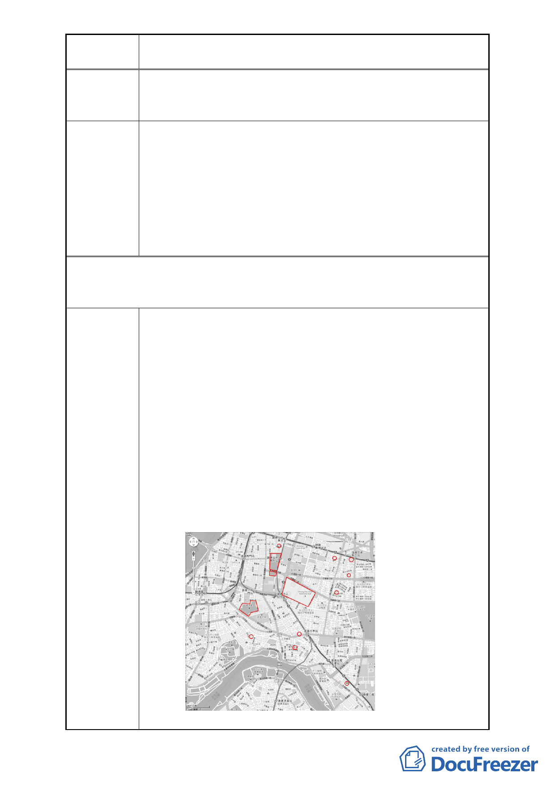

案名
變更臺北市中正區南海段一小段 719、724 地號等 2 筆停車場
用地為廣場用地細部計畫案
政府政策反覆、矛盾！不應該犧牲人民居住與維生之權益，
陳情理由 造成另一個社會問題！市場上傳言四起，已有財團介入此規
劃案！
讓住戶就地安置，並交由交通捷運局聯合開發商業廣場，以
達雙贏。
為避免獨厚財團、踐踏原住戶，我們強烈要求主政單位應交
建議辦法
由捷運局聯合開發，讓捷運局統一管理！一切透明、公開！
希望地上物比照捷運交通模式，讓原住戶「就地安置、賴以
維生」！並依照「都市計畫公共設施用地多目標使用辦法」
之規定，作多目標設計！應規劃開發商業廣場，帶動經濟繁
榮、地盡其利，讓原住戶能維持生計，達成多贏之目標！
第二次陳情（100.2.7..）（連署人：中華民國雜誌事業協會、黃漢雄、陳照
一、張順誠、廖添福、唐光雄、翁有德、蕭慈聖、孔志楊（委託人：孔志
浩）、方家泰、詹德遜）
1.此區域不適合再作廣場用地之規劃，政府應通盤檢討、重
新審慎規劃。
（1）根據台北市政府主計處統計：
臺北市總面積 13529929 平方公尺，平均市民享有公園
綠地面積為 5.17 平方公尺！
中正區總面積 869331 平方公尺，平均市民享有公園綠
地面積為 5.45 平方公尺！
中正區市民平均享有的公園綠地面積，已超過臺北市市
民享有之平均值。在臺北市 12 個區域中排名前三分之
一，因此廣場用地並非急迫性需求之重大建設。再說
此地區鄰近就有中正紀念堂、二二八公園、台北植物
園等公園大型廣場綠地，所以本區域不適合再做廣場
陳情理由
用地之規劃。
- 11 -